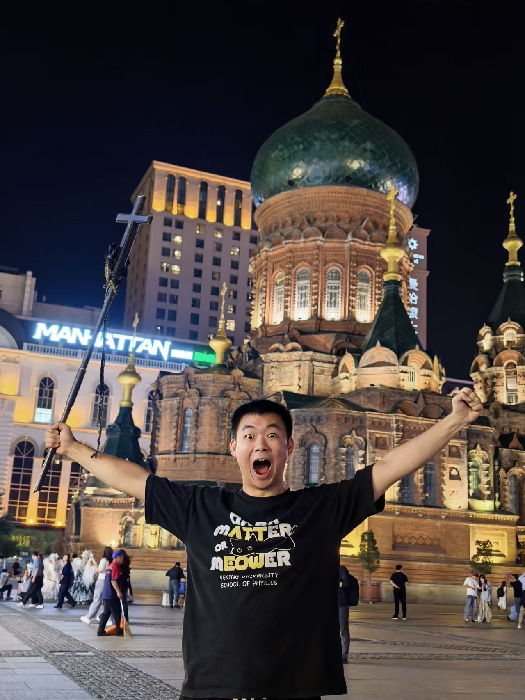

> 正在解密课题组档案数据...
> W (Principal Investigator)

姓名 [Name]: 吴成印 教授
机构 [Affiliation]: 北京大学 物理学院
核心方向 [Core Research]: 超快动力学 / 空气激光 / 固体高次谐波
联系方式 [Contact]: cywu@pku.edu.cn
> 主要从事飞秒强激光和物质相互作用的实验研究，包括原子、分子、团簇、固体材料和微纳结构。
> 课题组大神 (Team Gods)

周卓彦 (23级博士)> EOF_